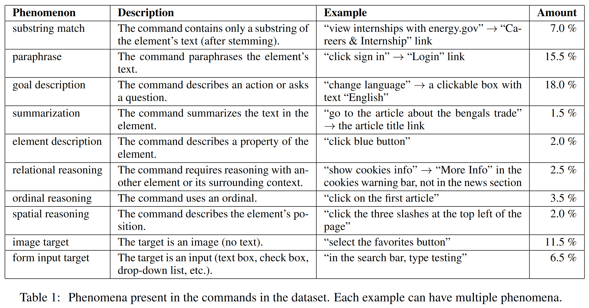
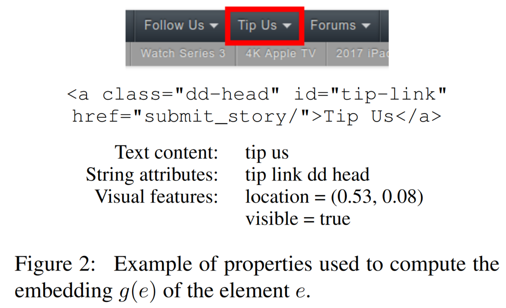
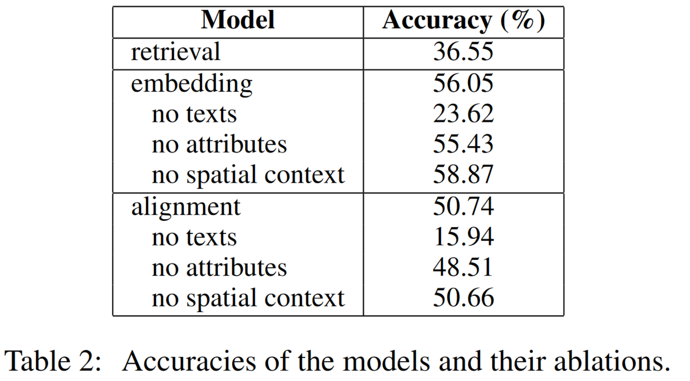
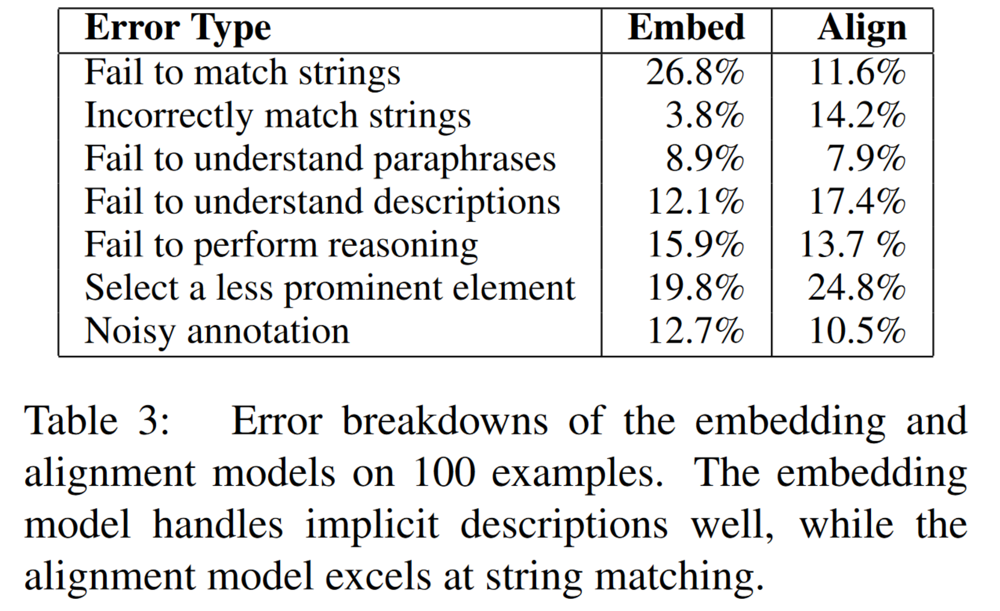

[论文解读]Mapping natural language commands to web elements
论文地址：Mapping natural language commands to web elements 。
摘要
Web 提供了一个丰富的开放域环境，具有文本、结构和空间属性。在这个环境中，我们提出了一个需要将语言与环境联系起来的任务（task for grounding language）：给定一个自然语言命令（如“点击第二篇文章”），在 web 页面上选择正确的元素（如一个超链接或者文本框）。我们收集了一个数据集，含有超过 50000 条命令，以捕捉不同的现象如功能参考（找到谁创建了这个网站）、关系推理（John 的文章）和视觉推理（最上面的文章）。我们同时实现并分析了三个捕捉数据集中不同现象的基线模型。
研究背景
Web 界面是包括结构化属性与非结构化属性的复杂文档。由于内容和设计的多样性，Web 界面为自然语言联系环境任务（natural language grounding tasks）提供了一个丰富的环境。
具体地，本文考虑将自然语言命令转换为 Web 页面元素的任务。有些命令直接指向元素的文字，但是很多其他的命令需要对 Web 页面多角度的更加复杂的推理，如文本、属性、样式、DOM 中的结构数据和 Web 页面中的空间数据。
本文的工作是语义解析（将自然语言描述映射为像数据库查询和对象操作之类的动作）工作的扩展。这些动作通常在一个固定且已知的环境中进行，而 Web 页面包含更加多样的结构，这让任务具有了更多的可能性。本文的工作可以视为是一种参考游戏（reference game），给定一个自然语言描述，必须找到指定的对象。这个工作的主要难点在于：
- Web 页面中的元素有多种属性。
- 为了解析元素，需要结合上下文。
基于自然语言的元素识别在现实世界中有多种应用，如它可以为 Web 页面提供一个声音界面，这对视觉障碍者会很有用。另外一个应用是浏览器自动化：自然语言命令比 CSS 和 XPath 选择器更为灵活，并且可以在不同的浏览器之间泛化。
文章贡献

我们收集了一个含有超过 50000 条自然语言命令的数据集。如图 1 所示，命令涵盖了许多场景，如关系推理、视觉推理以及功能推理。
同时我们还分别基于检索、元素嵌入、文本对齐分别实现了三个模型用于解决该问题。我们的实验分析表明：功能引用、关系引用和视觉推理对从自然语言命令中正确识别元素非常重要。
问题描述
给定一个 Web 页面 ，其中包含元素 ，再给定一条命令 ，本文的任务是找到由 描述的元素 。本文的训练集和测试集就是由若干个 三元组组成。
数据集
我们在 1835 个页面上收集了 51663 条命令。收集数据的步骤如下：
- 在 Chorme 中渲染并储存了前 10000 个网站的主页。
- 记录下 DOM 树和每个元素的几何信息，并且储存渲染好的 Web 页面。
- 筛选出所有被正确渲染，且没有错误内容的英文页面。
- 让众包工作者进行头脑风暴，对于每个 Web 页面，想出不同的动作，要求每个动作关联且只关联筛选出的交互元素列表中的一个元素。
同时，我们鼓励众包工作者不要使用直接指向元素的单词。最后，将收集到的数据以 的比例划分为训练集、验证集和测试集。三个数据集中的页面不会重复。
收集到的页面平均有 1051 个元素，收集到的命令平均长度为 4.1 个 token 。
命令中的现象
除了直接指向元素的文本，命令可以以多种方式指向元素，分析了训练集中的 200 个数据，得到的结果如表 1 所示。
即使命令直接指向元素，页面中也会有其他的有着命令中单词的元素。平均来说，不包括停止词，命令与 5.9 个叶节点元素有相同的单词。
解决方法
本节主要介绍解决问题的三个模型：基于检索的模型、基于嵌入的模型和基于对齐的模型。
基于检索的模型
很多命令通过它们的文本内容指向元素。因此可以使用检索模型，基于 TF-IDF 分数，以命令作为搜索请求，找到与其最相关的元素。
具体地，通过以下两种计算，将每个元素表示成一个词袋（bag-of-tokens）：
- 标记其文本内容，并进行词干处理。
- 在标点符号和驼峰命名的边界处标记其属性（id, class, placeholder, label, tooltip, aria-text, name, src, href）
在计算频率时，通过一个因子 对属性 token 进行降权处理。在实验中， 的值被设置为 。
文档频率通过训练集中的网页进行计算。如果有多个元素具有相同的分数，则通过启发式算法选择最重要的元素，即先序遍历 DOM 树，选择最早出现的元素。
基于嵌入的模型
一个常见的匹配两端文字的方法是分别将它们嵌入成向量，并且计算这两个嵌入向量之间的相关分数。对于命令 和元素 ，定义以下条件概率分布：
其中 是分数函数， 和 分别是 和 的嵌入向量。这个模型的目的是最大化训练集中正确元素概率的对数值。
命令嵌入
为了计算 ，先将 中的每个 token 嵌入成固定维度的向量，并且对所有的向量取平均值作为最终的嵌入向量。所有 token 的嵌入向量为 GloVe 向量。
元素嵌入

为了计算 ，先对 的所有属性进行嵌入，将得到的结果拼接起来，并应用一个全连接层，得到一个和 维度相同的向量。如图 2 所示，属性包括如下四种：
- 文本内容：使用命令嵌入函数 对 的文本内容进行嵌入。由于大多数感兴趣元素（链接、按钮、输入框）的文本都较短，因此将文本限制为前 10 个 token 已经足够，并且可以节省内存。
- 文本属性：一些属性（aria, title, tooltip, placeholder, label, name）通常包括自然语言，因此我们将这些属性拼接在一起并且使用 得到嵌入结果。
- 字符串属性：对于其他的字符串属性（tag, id, class），在标点符号处以及驼峰命名的边界处进行标记。用单独的查找表进行嵌入操作并取平均值。
- 视觉特征：建立一个包含元素中心坐标（用网页长宽百分比的方式）和可视属性（布尔值）的向量。
分数函数
为了计算 ，先将 和 标准化得到 和 。然后对向量 应用一个全连接层得到最后的分数，其中 表示逐元素相乘。
融合空间上下文
在某些情况下，上下文十分重要，如：根据已知的邻居标签文本选择文本框，或者给定作者名字，选择作者名字旁边的文章。基于命令确定需要考虑的关联元素是一个富有挑战性的任务。
我们实验性地将空间上下文模块加入了模型。对于每个方向 ，使用 计算每个方向上最靠近元素 的邻居元素 的嵌入。如果这个方向上有多个最近元素，随机选取一个，如果没有，就是 向量。接下来进行标准化得到 ，再将 和 拼接起来输入到全连接层。
基于对齐的模型
基于嵌入的模型的一个缺点在于来自 和 的文本 token 不直接交互。为了解决这个问题，本文采用了一种基于单一对齐矩阵的方法。
假设 表示 的文本内容和文本属性的拼接，并只保留 10 个 token。我们构建一个矩阵 ，其中 是 第 个 token 的嵌入向量与 第 个 token 的嵌入向量的点积。然后在矩阵上应用两个 的卷积层和一个 的最大池化层，将结果与 tag 的嵌入连接起来，输入到一个全连接层中，得到一个 维向量 。
最后对 应用一个单独的全连接层得到一个标量分数，然后使用与基于嵌入的模型相同的目标函数进行训练。为了考虑上下文，简单地将 拼接在一起输入到最后的全连接层。
实验验证
本文实验的指标为准确率，即在所有样本中，模型正确选择了对应元素的样本所占的比例。使用 Adam 优化器训练模型，学习率设置为 ，并且基于验证集使用 earlystop 策略。模型可以选择页面上渲染出来的任何元素。
实验结果如表 2 所示，两个神经模型的效果都要明显好于检索模型。

消融分析
为了衡量网页中每种信息的重要性，本文进行了消融实验，依次让模型不能观测到某一种元素：文本内容、属性和空间上下文。
如表 2 结果所示：
- 文本内容是最重要的输入信号。
- 在嵌入模型和对齐模型中，属性也发挥了很重要的作用。
- 空间上下文信息提升了对齐模型的效果，但是提升幅度很小。这说明由于上下文类型的多样性和信号的稀疏性，将适当的上下文融入模型是一项具有挑战性的任务。
错误分析
为了更好地理解模型如何处理不同的问题，我们在验证集的 100 个嵌入模型和对齐模型出错的样本上进行了分析，结果如表 3 所示：

接下来分别详细阐述每种错误。
无法匹配字符串
很多命令只是简单地指向元素的文本内容（如“click customised garages”指向链接文本“Customised Garages, Canopies & Carports”）。嵌入模型将整个命令嵌入成一个单独的向量，这让它在部分情况下会无法选择只有部分文本匹配的元素；相比之下，对齐模型明确地模拟了文本匹配，因此在这种情况下效果更好。
错误匹配字符串
由于对文本匹配的依赖，当很多元素与命令有相同的子串时（命令为“shop for knitwear”，并且有很多元素包含单词“shop”），或者当有匹配子串的元素不是正确目标时（“get the program”应当对应“Download”，而不是“Microsoft developer program”），对齐模型会遇到困难。
无法理解表达
许多命令利用释义、目标描述和元素特性间接地描述元素。在这种情况下，将元素的不同属性总结为一个嵌入向量的嵌入模型效果就会比对齐模型更好，但是在一些更困难的样本上（“please close this notice for me”指向带有文字“Hide”叉按钮）也会出错。
无法进行推理
大多数情况下，模型无法进行关系、顺序和空间推理。最常见的错误是当目标是一个文本框，但是命令使用了文本框附近的标签作为参考。虽然一些文本框提供可供模型使用的语义注释（如提示工具或者界面特性），但是很多网页并不提供此类注释。为了解决这些问题，模型必须基于逻辑上下文或空间上下文辨别文本框的标签。
其他错误
除了注释噪声以外，有时候网页上会有多个元素满足给定的命令（如“log in”可以匹配页面上的任意“Sign In”按钮）。在这种情况下，注释通常会给出所有候选元素中最“突出”的元素。为了给用户提供更加自然的界面，模型应当可以学习预测这些突出的元素，而不是更模糊的元素。